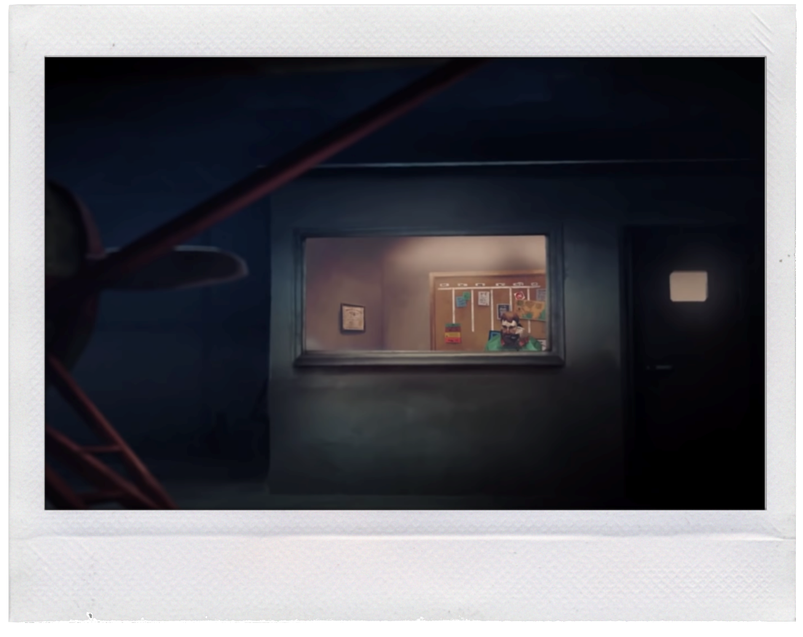

Page 2: The Proposition
Hello? you say apprehensively into the old phone. You suspect a scam caller or someone trying to sell you another obscure type of insurance but the voice on the other end of the phoe is warm and genuine... and familiar.
"Hi Mackenzie, long time no speak" says the voice.
"Astrid?" you ask. It's been years since you spoke to your old University friend.
From what you can remember, she dropped off the face of the earth when she moved away to persue a doctorate in some obsure science.
"Yep" She pauses, clearly unsure of how to word her next words.
"I need your help. Do you still "
You look out the window, sigh at the blizzard howling outside and listen to what she has to say.
She wants you to fly her north.
She has lost contact with a team of scientists she works with. They were investigating reports of Aroras that had reportedly been causing massive electromagnetic distortion to the surrounding area.
Contact with the team was lost about a week ago and Astrid wants you to fly her out there in order to investigate.
She sounds desparate.